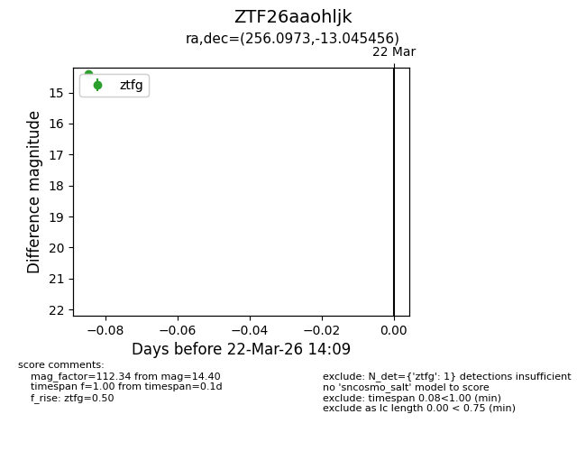
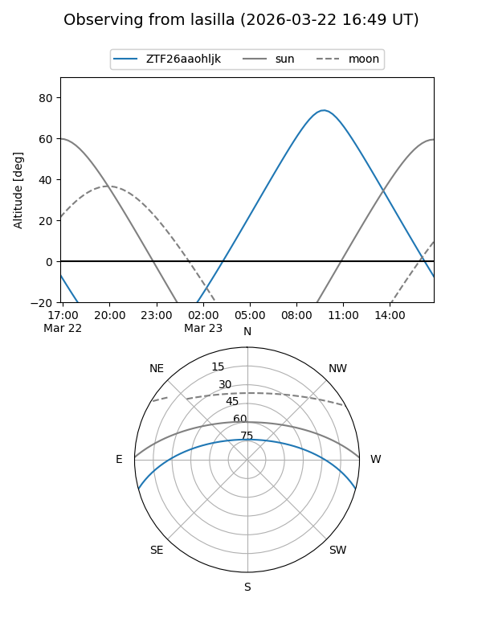
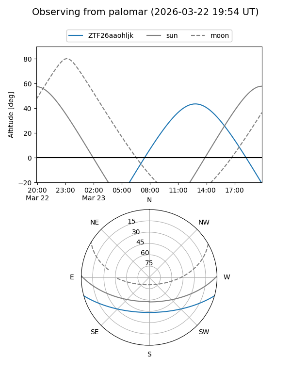

ZTF26aaohljk
Target ZTF26aaohljk at 2026-03-22 14:11
Aliases and brokers:
FINK: link
Lasair: link
ALeRCE: link
alt names
ZTF26aaohljk (ztf,fink_ztf)
Coordinates:
equatorial (ra, dec) = 256.0973,-13.04546
equatorial (HMS+DMS) = 17:04:23.36,-13:02:43.64
galactic (l, b) = (8.1865,+16.70723)
Flags:
Photometry:
last ztfg=14.40
1 ztfg detections
Lightcurve

Visibility


Additional plots